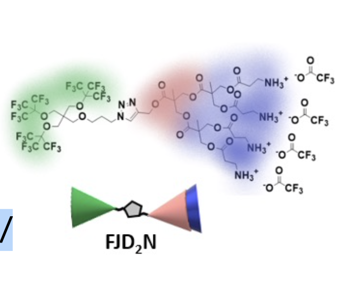

Home
Tutorial: My tutorial
Tutorial contributors: Andreas Haahr Larsen (affiliation).

This is dendron - a molecule.
Before you start
- Download and install SasView.
- Recommend that you do first the Sphere tutorial
Learning outcomes
Calculate scattering length densities for the molecule dendron and fit the small-angle neutorn scattering of self-assembled dendron- Use NIST scattering length density calculator.
- Fit multiple contrast simulataneously in SasView.
Introductory remarks
More contrast, highlight various parts, more inforation... what is dendron.
Part I: Calculate scattering length densities for dendron
In this part you should... chemical formula C50H66F27N7O18... NIST SLD calculator.
Part II: Fitted the SANS data of dendron
In this part you should fit some measured SANS data.
Challenges
- Challenge 1: Fit some other data.
- Challenge 2: calculate SLD of ...
Feedback
Help us improve the tutorials by- Reporting issues and bugs via our GitHub page. This could be typos, dead links etc., but also insufficient information or unclear instructions.
- Suggesting new tutorials/additions/improvements in the SAStutorials forum.
- Posting or answering questions in the SAStutorials forum.